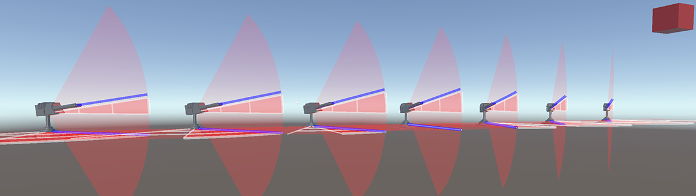
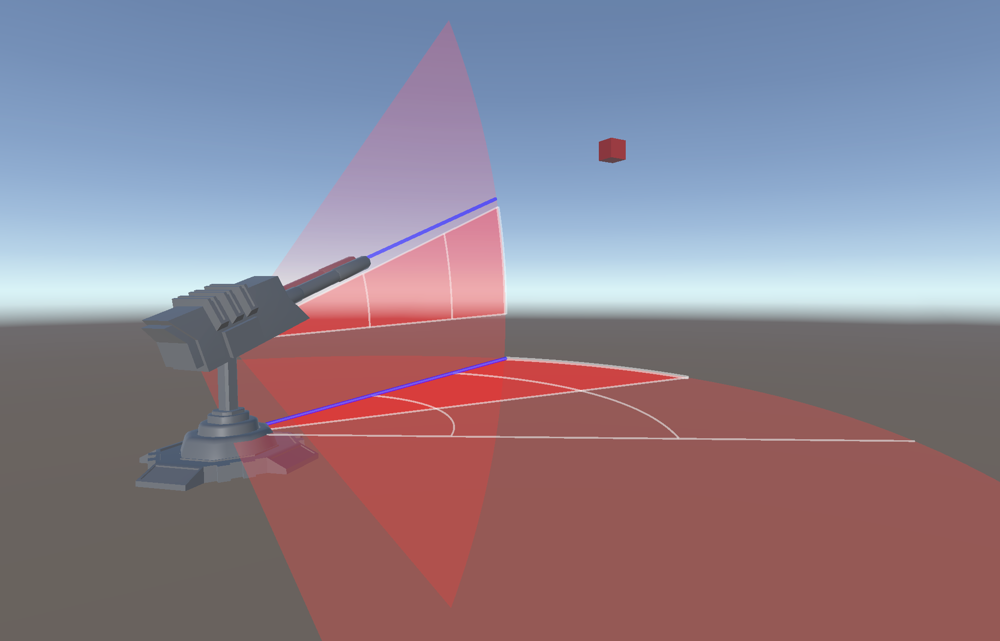
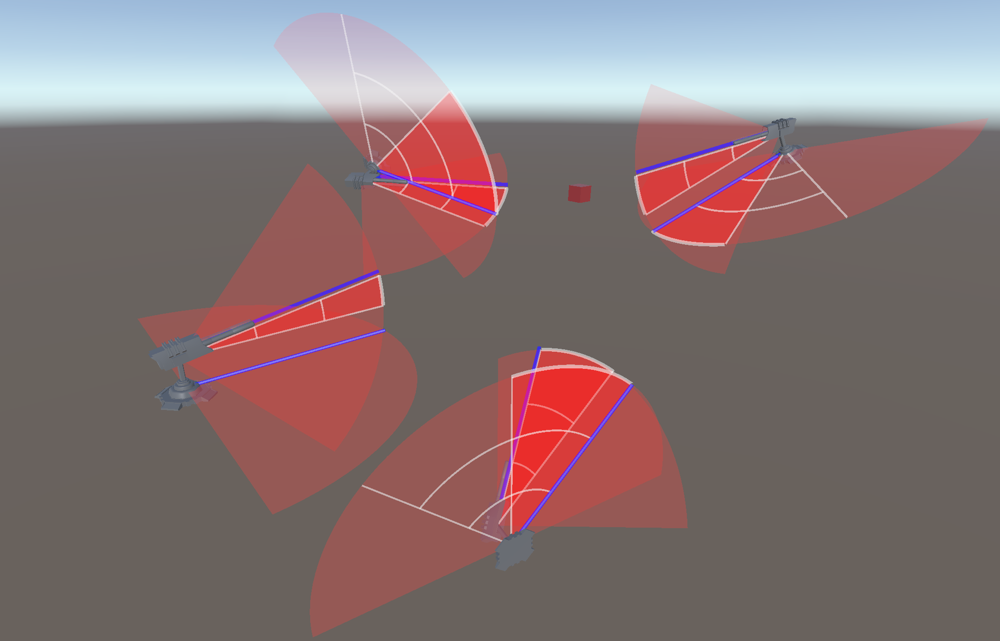

Turret targeting study
I made this project to deepen my understanding of C#, rotations, and unitys visual debugging tools. In this project, I explored two different approaches to building a turret system, where multiple joints work together to accurately point towards a target.
Approach 1: The All-in-One Turret (Turret Script)


Components and Initialization
Turret Component: The turret is composed of three parts - the base, the neck, and the top. These parts are separate GameObjects.
Finding the Target: The turret finds a target object by searching for GameObjects tagged as "Target." It uses the first found target or sets a default target position if no targets are available.
Debugging visuals: A debugging mode to visualize the turret's aiming direction, and rotations using Gizmos in the Unity editor.
Rotation Overrides: This approach includes a mechanism to override the rotation direction when limits are reached. It ensures that the turret moves in the most efficient direction to reach the target.
Validation: The turret performs angle validation to handle rotation changes and avoid sudden jumps in orientation.
Aiming Mechanics
Update Loop: In the Update method, the turret continuously calculates the distance to the target and checks if it's within the maximum target range.
Base Rotation: The turret calculates the rotation required for both the base and top to aim at the target. It uses the Vector3.SignedAngle function to determine the rotation angle.
Rotation Constraints: To prevent the turret from exceeding predefined rotation limits, the LimitRotation method is used to clamp the rotations.
Working together as one: The Joint Script employs multiple joints to create a turret system that adapts to various orientations.
This allows the turrets to be position anywhere while still ensuring they all focus on a common target.
Precise target tracking: The script ensures that turrets accurately track and aim at the target, even within complex configurations..
Approach 2: The Jointed Turret (Joint Script)
The 2nd approach is comprized of multiple "Joint" components that work together to orient the turret. The difference in from the previous approach is that the turret can be configured with multiple joints instead of the predefined Base, Neck & Top.
Jointed design